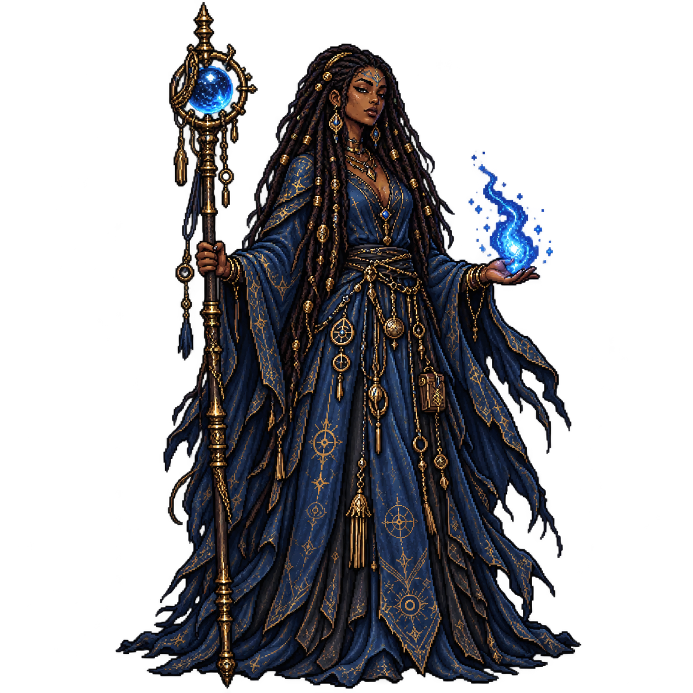

The Drifters · Black Mage
Azhvielle
The Unconfessed
A witch from a vanished court whose name appears in too many histories, carrying the Needle of Plain Iron and a lifetime of consequences.
“Yes, I can solve this with magic. That does not make it sensible.”
The disputed witch
From the vanished cities of Vharosyne comes a woman whom history cannot properly identify. Records call her a court witch, healer, archivist, tutor, and adviser to rulers whose kingdoms now survive only as footnotes.
Centuries have made Azhvielle cynical, practical, and unimpressed by grand claims. She prefers an ordinary solution whenever one exists, which is more often than most people would like to admit.
How she fights
Azhvielle commands fire, water, ice, air, earth, metal, lightning, smoke, and their combined forms. Every spell risks an unrelated anomaly elsewhere, so power is always weighed against consequence.
Frost and Gravemantle let her shape the pace of a battle through pressure and control instead of meeting danger head-on.
Why the dungeon
She entered after learning that a surviving Vharosynian record had been recovered below. She refuses to explain what it contains or why it bears her name.